ComplexSISOSingle Input Single Output continuous control block |
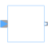
|
Information
This information is part of the Modelica Standard Library maintained by the Modelica Association.
Block has one continuous Complex input and one continuous Complex output signal.
Parameters (1)
| useConjugateInput |
Value: false Type: Boolean Description: If true, input is processed conjugate complex |
|---|
Connectors (2)
| u |
Type: ComplexInput Description: Connector of Complex input signal |
|
|---|---|---|
| y |
Type: ComplexOutput Description: Connector of Complex output signal |
Components (1)
| uInternal |
Type: Complex Description: Equals either u or conjugate complex input u if useComplexInput = true |
|---|
Extended by (15)
|  |
Modelica.ComplexBlocks.Routing Pass a Complex signal through without modification |
| 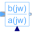 |
Modelica.ComplexBlocks.ComplexMath Complex Transfer Function |
|
Modelica.ComplexBlocks.ComplexMath Output the natural (base e) logarithm of the input (input <> '0' required) |
|
| 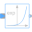 |
Modelica.ComplexBlocks.ComplexMath Output the exponential (base e) of the input |
|  |
Modelica.ComplexBlocks.ComplexMath Output the hyperbolic tangent of the input |
| 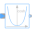 |
Modelica.ComplexBlocks.ComplexMath Output the hyperbolic cosine of the input |
|  |
Modelica.ComplexBlocks.ComplexMath Output the hyperbolic sine of the input |
|  |
Modelica.ComplexBlocks.ComplexMath Output the arc tangent of the input |
|  |
Modelica.ComplexBlocks.ComplexMath Output the arc cosine of the input |
|  |
Modelica.ComplexBlocks.ComplexMath Output the arc sine of the input |
| 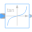 |
Modelica.ComplexBlocks.ComplexMath Output the tangent of the input |
| 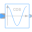 |
Modelica.ComplexBlocks.ComplexMath Output the cosine of the input |
| 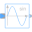 |
Modelica.ComplexBlocks.ComplexMath Output the sine of the input |
|  |
Modelica.ComplexBlocks.ComplexMath Output the square root of the input (= principal square root of complex number) |
|
Modelica.ComplexBlocks.ComplexMath Output is equal to the conjugate complex input signal |